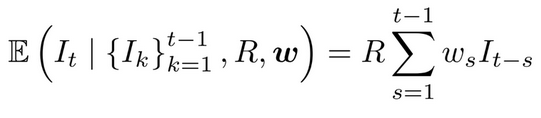
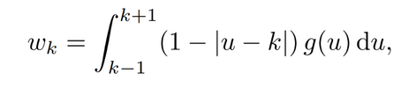
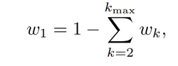

<!DOCTYPE html>
<html>
  <head>
    <meta charset="UTF-8">
    <meta name="viewport" content="width=device-width, initial-scale=1.0">
    <title>Mathematical Approach</title>
    <link href="/styles.css" rel="stylesheet" type="text/css" media="all">
  </head>
  <body>
  <header>   <h1> Predicting the probability of a major outbreak </h1> 


</header>
   <nav>

   <div id="navblock"><a href="/index.html">Index </a></div> <div id="navblock"><a href="/analyticapp">Analytic PMO calculator</a></div><div id="navblock"><a href="/approaches">Approaches</a></div>
          
</nav>

    <h2>Epidemiological models </h2>
    
    <div id="txtbox"> <p>0.1 Methods
0.1.1 Epidemiological model
Underlying our probability calculation methods is a discrete-time renewal process, a standard epidemic model for
infectious disease dynamics that allows us to model new cases over time [1].
The expected number of new cases at time t is given by</p>
<div class="centeringbox">
</div>
<p>which depends on:</p>
<ul>
<li>past cases, <i>&Iota;</i><sub>t-s</sub></li>
<li>how strongly those past cases contribute to new cases today, determined by the serial interval weights,  	&omega;<sub>s</sub>;</li>
 <li>the average number of secondary cases per case, R</li>
 </ul>
 
<p>As is common in the literature [1], new cases are generated by drawing from a Poisson distribution with this
expected value. 

We model transmission using a weekly discretised serial interval distribution &omega; = (&omega;<sub>2</sub>, &omega;<sub>2</sub>, . . .). To construct
these weights, we begin with a continuous gamma distribution for the serial interval with mean 15.3 days and standard deviation 9.3 days, consistent with estimates from the 2014–2016 West Africa Ebola epidemic [2]. Expressing
time in weeks, let g(u) denote the corresponding gamma density. Following the procedure of Ogi-Gittins et al. [3],
we discretise this continuous distribution onto a weekly time step using a triangular kernel. For weeks k ≥ 2 we set</p>
<div class="centeringbox">
</div>
<p>and define the first weight as the remaining probability mass,</p>
<div class="centeringbox">
</div>
<p>where we take k<sub>max</sub> = 50 to ensure the tail probability is negligible. Finally, the weights are normalised so that</p>
<br>
<div class="centeringbox">
</div>
<br><br>
<p>Having defined the underlying epidemic model, we now investigate the key question: given early incidence data,
such as the first three weeks of case counts [I1 I2 I3], what is the probability that a large outbreak will follow?
To answer this, we consider three approaches to estimating this probability: (i) an analytic calculation based
on branching process theory; (ii) a trajectory matching approach using simulated outbreaks; and (iii) a machine
learning classifier trained on large numbers of simulated outbreaks.</p>
</div>
  </body>
</html>
